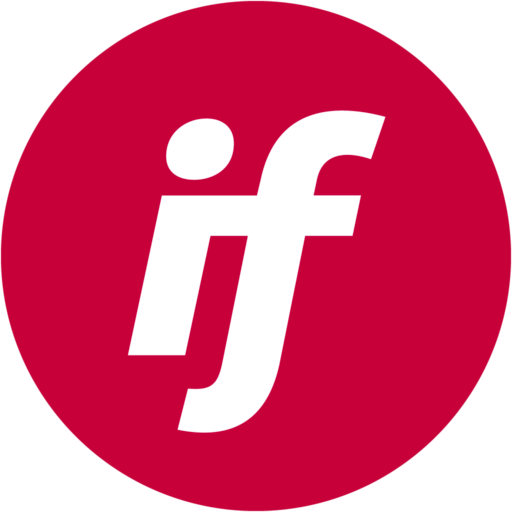
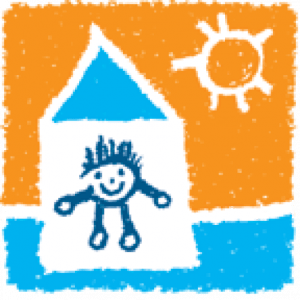

WORK
PROBLEM
Many organizations use outdated systems that no longer fit their needs as they grow in size and creativity in donor outreach. Many also have heaps of old, fragmented, or dirty data they can't trust.
Many organizations use outdated systems that no longer fit their needs as they grow in size and creativity in donor outreach. Many also have heaps of old, fragmented, or dirty data they can't trust.
SOLUTION
I work with organizations' development, accounting, and information teams to understand their unique needs, then lead tailored data clean-ups, system migrations, and cloud service deployments to achieve them, and design documentation to show how it all works.
I work with organizations' development, accounting, and information teams to understand their unique needs, then lead tailored data clean-ups, system migrations, and cloud service deployments to achieve them, and design documentation to show how it all works.
VERMONT COMMUNITY FOUNDATION
full system transformation and support
greater new orleans foundation
data clean-up and integration consulting

Initiative Foundation
data migration and training

Casa De Los Ninos
data clean-up, migration and support
New Mexico Foundation
system migration and integration
Vermont Adaptive
data clean-up, migration, and support
Little City Foundation
full system transformation and integration
Erie Arts and Culture
data migration

Hope Children's Home
data migration and system integration
Oregon Community Foundation
system integration consulting
Roof Above
data clean-up and system migration
Greater Washington Foundation
current state analysis
"Brayden, [...] you are such a quick learner and have a bright future ahead. Your level of detail shows that you are one of the best in the business."
- Jake Gardner, Vermont Community Foundation
- Jake Gardner, Vermont Community Foundation
"We LOVE Brayden!!"
- Kim Slipy, Initiative Foundation
- Kim Slipy, Initiative Foundation
"Shout out to Brayden! He seamlessly blended into our meetings with clients, showcasing his knowledge and expertise in Virtuous. I appreciate your hard work!"
- Jillian Findlay, NPact
- Jillian Findlay, NPact
"3 cheers for Brayden! Brayden provided expert troubleshooting with some tricky coding in Intacct that now allows us to deliver a strong Foundation Cloud-Intacct solution for our client."
- Roshan Darji, CPA
- Roshan Darji, CPA
"Huge shoutout to Brayden! Thank you for really hearing us, especially on our request with Virtuous attributes and getting that resolved so quickly. This is exactly what we asked for!"
- Rachael Miletkov, New Mexico Foundation
- Rachael Miletkov, New Mexico Foundation